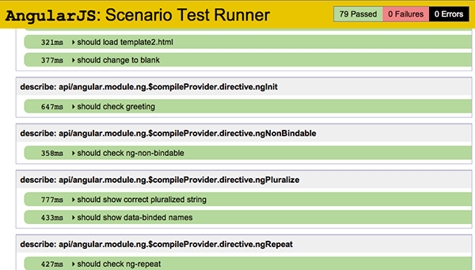

&
Batarang
What is AngularJS?
HTML enhanced for web apps.
Enhanced you say? Enhanced how?
Elevator Pitch
Superheroic JavaScript?
AngularJS is a new, powerful, client-side technology that provides a way of accomplishing really powerful things in a way that embraces and extends HTML, CSS and JavaScript, while shoring up some of its glaring deficiencies. It is what HTML would have been, had it been built for dynamic content.
What do I think
is cool about AngularJS?
I'm glad you asked. This Slideshow is an Angular app, so please allow me to show you the light.
Two Way Data-Binding
Hello, {{yourName}}!
Templates
MVC
AngularJS incorporates the basic principles behind the original MVC software design pattern into how it builds client-side web applications. AngularJS does not implement MVC in the traditional sense, but rather something closer to MVVM (Model-View-ViewModel).
Model
Models in AndularJS are the data behind your app, & are nothing more then JavaScript objects
ViewModel
The viewmodel is the $scope object that lives within the AngularJS application. $scope is just a simple JavaScript object that provides specific data and methods to maintain specific views.
Controller
The controller is the code behind your view that is responsible for all app behavior. You can see there is no DOM manipulation or framework boilerplate.
View
The view is the HTML that exists after AngularJS has parsed and compiled the HTML to include rendered markup and bindings.
Directives
Make custom web components with Angular. Sorry I ran out of time :)
Built-In Testing
AngularJS comes with an end-to-end and unit test runner all setup. https://github.com/angular/angular-seed
Batarang
Chrome DevTools extension made for debugging Angular apps, because $scope can get kinda tricky.

*Chrome Canary only (for now)